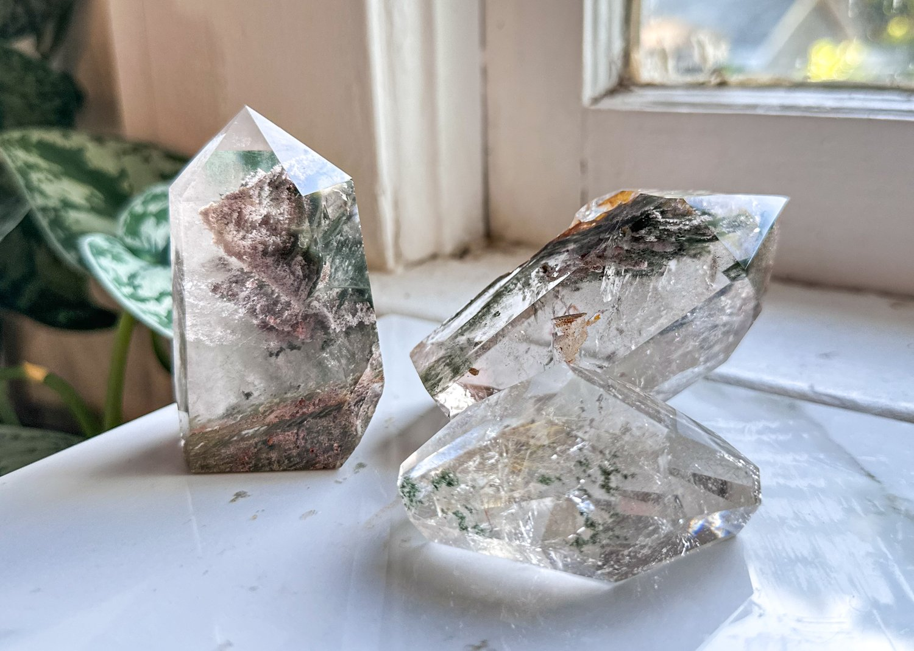
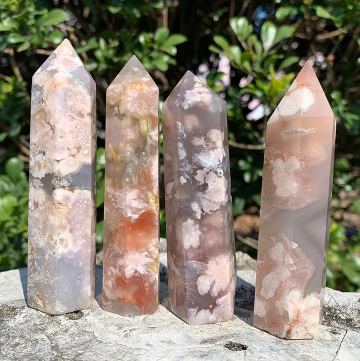

Different Crystals
Garden Quartz
Enhances deep meditation, intuition, and spiritual insight.
Garden quartz, also known as Lodolite, Scenic Quartz, or Inclusion Quartz, is a mesmerizing variety of quartz that contains unique mineral inclusions, creating patterns that resemble landscapes, forests, or underwater scenes. These inclusions, which can include minerals like chlorite, hematite, and feldspar, form naturally over millions of years as the quartz crystal grows, trapping different elements within it. The result is a breathtaking stone with intricate, almost dreamlike imagery. Highly valued for its beauty and uniqueness, garden quartz is often used in jewelry, meditation, and spiritual practices. Many believe it carries powerful metaphysical properties, such as enhancing meditation, promoting healing, and amplifying energies and intentions. Whether admired for its aesthetic appeal or its spiritual significance, garden quartz is a captivating gemstone that connects nature and energy in a truly unique way.
Flower Agate
Symbolizes new beginnings and helps with self-improvement.
Flower agate is a unique and captivating variety of agate known for its soft, floral-like inclusions that resemble blooming flowers. These delicate patterns, typically in shades of pink, white, and cream, are created by mineral deposits forming within the stone over time. Found primarily in Madagascar, flower agate is a relatively recent discovery but has quickly gained popularity for its soothing, feminine energy and aesthetic beauty. Many believe it carries metaphysical properties that encourage personal growth, self-discovery, and emotional healing, making it a favorite among crystal enthusiasts. Often used in jewelry, meditation, and decorative pieces, flower agate is cherished not only for its stunning appearance but also for the sense of calm and inspiration it brings to those who work with it.